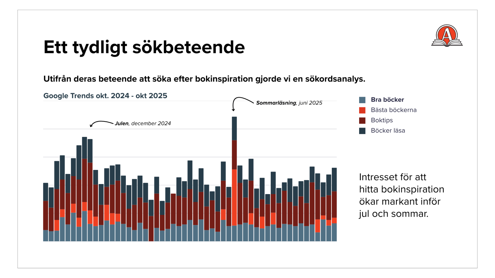
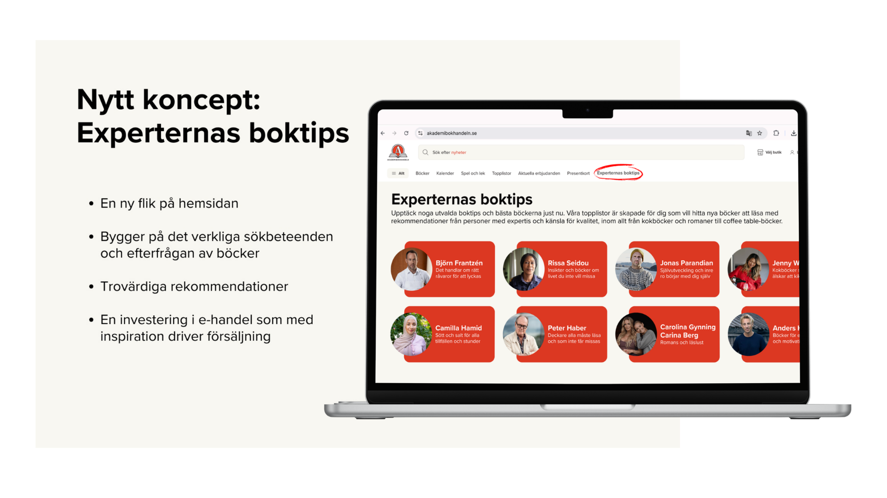
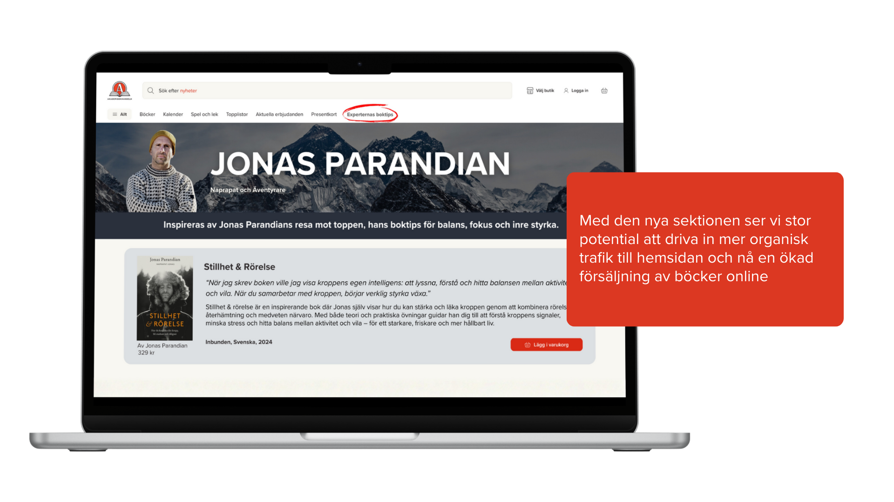

Ökad försäljning online
Hur vi genom en datadriven strategi skapade en ny destination för bokinspiration hos Akademibokhandeln, med målet att vinna den organiska trafiken från konkurrenterna.

Utmaning & analys
Arbetet inleddes med en djupgående omvärlds- och konkurrentanalys för att identifiera gap i marknaden. Genom att studera kundresan tog vi fram tre specifika personas.
Datadriven metod
Med stöd i Bokbarometern och Google Trends kartlade vi cykliska mönster i bokbranschen. Tydliga toppar inför jul och sommar dikterade vår timing för innehållsproduktion.
Strategiskt mål
Målet var att bygga en brygga mellan ren inspiration och snabb konvertering. Organisk synlighet skapar en hållbar tillväxtmodell för Akademibokhandelns e-handel.
Insikt: Från sök till köp
Genom en sökordsanalys identifierade vi ett tydligt beteende: användare söker aktivt efter specifik bokinspiration snarare än bara titlar. Genom att matcha detta med SEO-anpassat innehåll möter vi kunden i sökögonblicket.
Timing: Strategin fokuserar på att maximera synlighet under årets viktigaste försäljningsperioder.
Relevans: Varje rekommendation vilar på verklig efterfrågan och aktuella trender i Google-söket.


Lösningen: Experternas boktips
Vi lanserade en ny sektion på webbplatsen – en hubb för trovärdiga rekommendationer. Genom att kurera innehåll från kända profiler skapade vi en exklusiv känsla som skiljer Akademibokhandeln från de prispressande konkurrenterna.
- Kurerat urval: Fyra noggrant utvalda böcker per profil.
- SEO-optimering: Texterna är skrivna med sökordsfokus.
- Friktionsfri köpresa: Varje tips kopplat till direktlänk för köp.
Uttag i digitala kanaler
För att maximera räckvidden översatte vi hubbens innehåll till kanalunika format. Igenkänningsfaktorn från experterna skapade ett enhetligt uttryck från första scroll till konvertering.
- Instagram: Interaktiva format som driver trafik till hubben.
- Nyhetsbrev: Personliga tips baserade på expertens nisch.
- Paid Social: Riktade annonser mot specifika intresseområden.

Distribution & aktivering
För att säkerställa trafik till den nya sektionen tog vi fram en omfattande aktiveringsplan. Detta inkluderade format för Instagram och nyhetsbrev, där vi genom A/B-testning optimerade resultatet.
Konceptet fungerar som en långsiktig investering i varumärkets digitala närvaro, där inspiration och expertis driver en ökad försäljning online.
Nyckeltal i fokus
- Organisk trafik & sökordsranking
- Klickfrekvens (CTR) på expert-rekommendationer
- Konverteringsgrad per prioriterad titel
- Engagemang i nyhetsbrev & Instagram
Summering av effekt
Genom att kombinera mänsklig expertis med teknisk SEO-insikt transformerade vi bokinspiration från en statisk upplevelse till en drivande kraft för e-handeln. Resultatet är en skalbar modell som Akademibokhandeln kan använda säsong efter säsong.